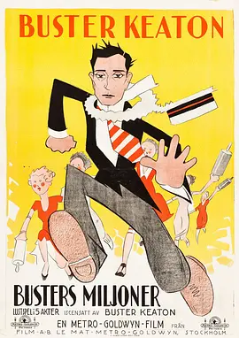
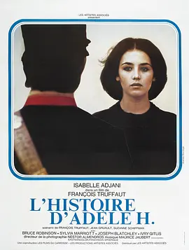

- 默片时代
- 欧洲先锋派电影运动
- 经典好莱坞时期
- 英国纪录电影运动
- 意大利新现实主义
巴斯特·基顿
- 《将军号》
- 《福尔摩斯二世》
- 《七次机会》
 - 《一周》
- 《邻居们》
- 法国新浪潮
- 新德国电影运动
- 新好莱坞时期
- 战后日本电影
- 新世纪的韩国电影
弗朗索瓦·特吕弗
- 《四百击》
- 《日以作夜》
- 《祖与占》
- 阿黛尔·雨果的故事
 - 《戏梦巴黎》

第25届上海国际电影节顺延至明年举办的公告
上海国际电影节组委会——2022年6月6日
华特-迪士尼工作室发布了《阿凡达2：水之道》的第一部预告片。
预告片在CinemaCon上首次亮相————2022年4月27日
又一年戛纳，我们来了！
经历了2020年的停滞和2021年的“康复”之后，戛纳仿佛才找回了一点元气————2022年5月17日
《教父》上映50周年：和他们一起老去的，是“昨日的世界”
隔着几个10年重看这三部科波拉的代表作，我们很难不承认《教父》系列已经无限接近于一种“理念”性的黑帮电影。
2022年第72届柏林电影节最终入围片单公布，将于2月10—20日举行！
去年的柏林电影节虽然因疫情改为线上，整体选片规模也缩小了许多，但完全不妨碍为很多影迷贡献了年度十佳榜单的候选,绝对算是柏林电影节的一个“大年”.
《永不消逝的电波》今起登陆全国院线
由中央广播电视总台央视频5G新媒体平台与中国电影资料馆联合完成的首部黑白转彩色4K修复故事片《永不消逝的电波》，正式登陆全国院线————2021年10月6日

2022年台北电影节，你想知道的都在这里！
台北电影节创办于1998年，经过二十多年的发展，如今已是亚洲的重要影展之一————2022年6月15日
重返巅峰的《爱死机》第三季
今年五月，《爱，死亡和机器人》第三季强势回归，为我们带来了一场关于爱、生死、未来和梦的无尽讨论，一场前往诗意、科幻和哲学尽头的旅行————2022年6月16日